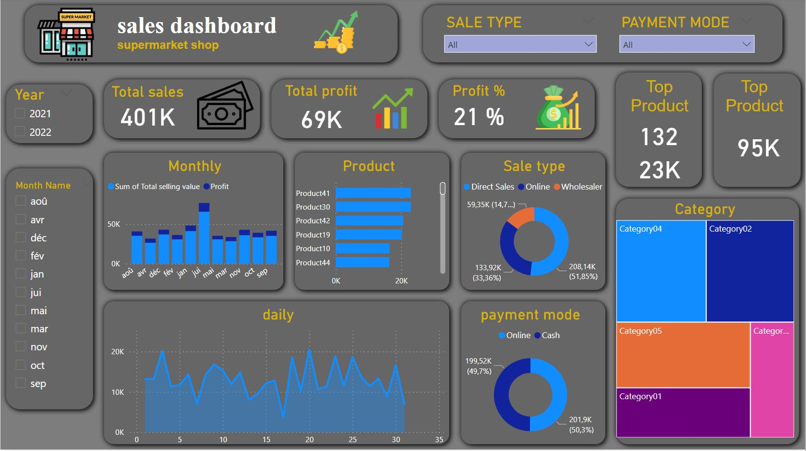
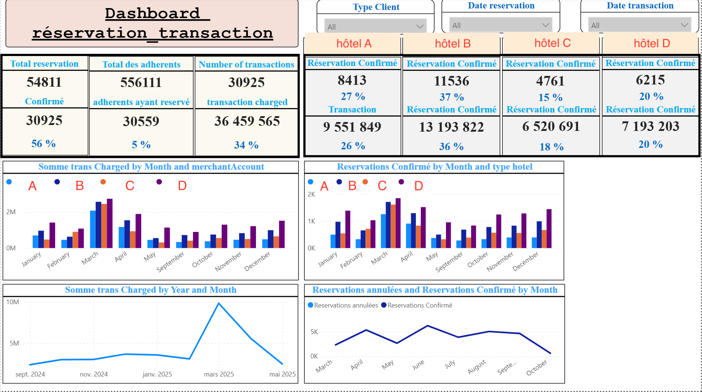

💼 Ce tableau de bord a été conçu pour offrir une vision claire et synthétique des indicateurs clés des ressources humaines d'une entreprise. Il permet aux décideurs RH de suivre en temps réel la composition du personnel, l'ancienneté, les niveaux d'emploi, l'état des promotions, le statut des employés (en service ou reclassés), la répartition par sexe, ainsi que la proximité géographique des collaborateurs.

🛒 Ce tableau de bord dynamique a été conçu pour visualiser les performances commerciales d’un supermarché de manière intuitive et détaillée. Il permet aux responsables des ventes et aux décideurs d’analyser les ventes mensuelles et quotidiennes, le chiffre d’affaires, les marges bénéficiaires, les produits et catégories les plus performants, ainsi que les types de vente et les modes de paiement.

Ce tableau de bord offre une vue d’ensemble dynamique des réservations et transactions effectuées au sein des hôtels. Il permet de suivre l’évolution de l’activité, de comparer les performances entre établissements et d’analyser les indicateurs clés tels que les réservations confirmées, les transactions réalisées et la participation des adhérents. Des filtres interactifs permettent d’affiner l’analyse selon le type de client — adhérent ou non — ainsi que selon les dates, qu’il s’agisse de réservations ou de transactions.

Ce tableau de bord offre une visibilité sur les arrivées et départs au sein des hôtels ZEPHYR. Il permet de suivre les indicateurs clés tels que les enregistrements (check-in), les départs (check-out), le nombre de chambres disponibles et bloquées, ainsi que le taux d’occupation pour chaque établissement.